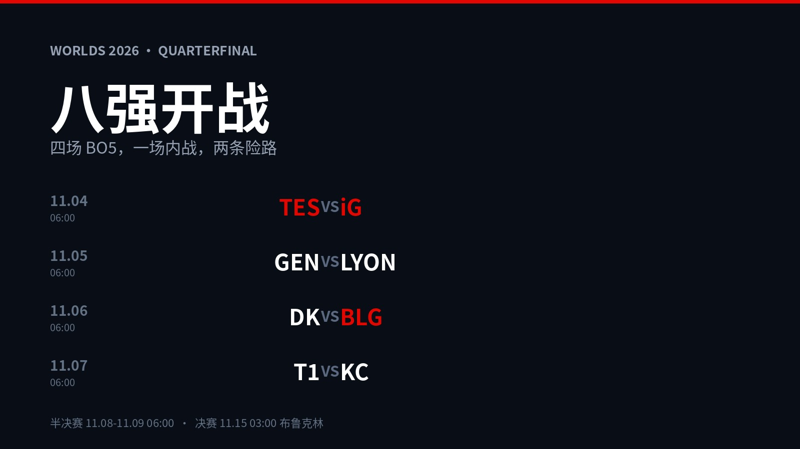
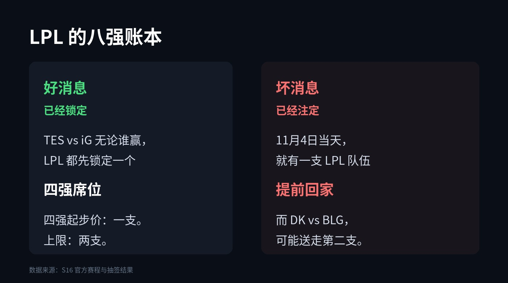
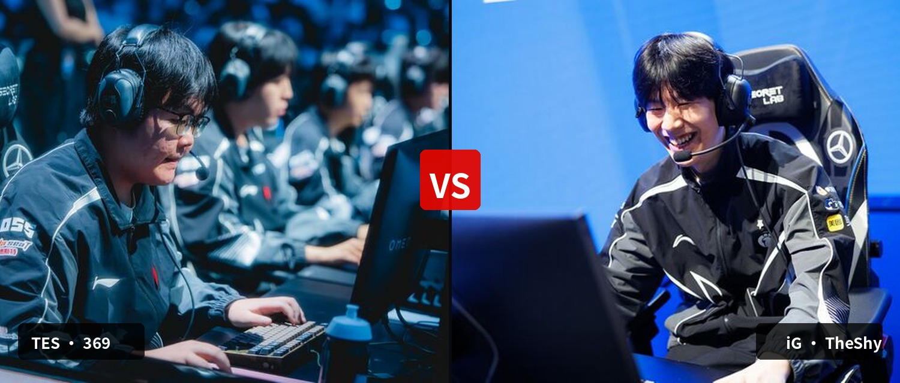
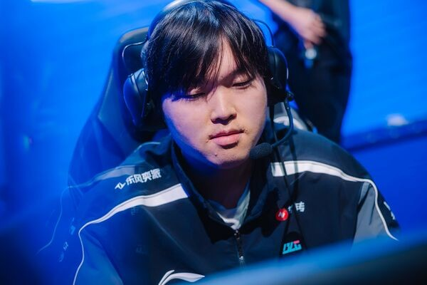

▲ 八强对阵与赛程。数据来源：S16 官方
先说好消息：LPL 三支队伍进了 S16 八强——iG、TES、BLG，这是近几年世界赛里 LPL 少有的齐整阵容。
再说坏消息：抽签把这三支队放进了同一个半区，而且第一场就是内战。
11月4日早上6点，TES 打 iG，五局三胜。当天晚上，就会有一支 LPL 队伍订好回程的机票。
1
一本账：先赢一个四强，再送走一支队

▲ 抽签落定后，LPL 的处境
把签摊开看，四组对阵是：TES vs iG、GEN vs LYON、DK vs BLG、T1 vs KC。时间全在北京时间早上6点，决赛是11月15日凌晨3点，纽约布鲁克林。
TES 和 iG 被抽到一起，意味着 LPL 已经预定了一个四强席位——这是好消息的另一半：不管谁赢，半决赛都有中国人。
坏消息在另一半区。BLG 抽到了 DK，一支 3-0 全胜出线的 LCK 一号池强队。如果 BLG 过不去，LPL 的四强上限就是一支。
LPL 四强的起步价是一支，上限是两支，答案全在接下来五天里。
2
第一场，就是全场最贵的一条路

▲ 369 与 TheShy。图源：Liquipedia 选手资料图
TES 的首发是 369、Tian、Creme、JackeyLove、Zhuo；iG 那边站着 TheShy、Wei、Rookie、JiaQi、Meiko。
先看 iG 这边的成色：TheShy、Rookie、Meiko，三个世界冠军。这支队伍时隔 2565 天回到八强，路上还干了一件大事——瑞士轮第三轮 1-0 掀翻 HLE，那是 LPL 本届第一次正面赢下 LCK 队伍。
再看 TES 这边的剧本：主力和替补一起出征，结果替补上单 ZUIAN 两次面签被卡，369 临危受命顶上首发。谁也没想到，这个被迫的安排成了 TES 这届最硬的一张牌——第四轮对 BLG，先丢一局，让一追二，决胜局 369 的剑魔一骑当千。
一个想证明自己还没老，一个刚被命运塞回首发。上路这一条线，装着两个完全不同的故事，和同一个四强名额。
3
最狠的一场：DK vs BLG

▲ BLG 上单 Bin。图源：Liquipedia 选手资料图
11月6日，DK 对 BLG，这是四场里实力差距看着最大、实际最不好说的一场。
DK 是 3-0 全胜出线，瑞士轮第二轮还 1-0 赢过 T1，一场没输。BLG 正相反，一路跌到 2-2，最后一天 2-0 零封 HLE 才压线挤进八强。
按纸面论，DK 稳赢。但有两件事不该被忽略：
第一，从 2-2 爬出来的队伍，没有心理包袱。BLG 最坏的结果已经经历过了，现在每一场都是白赚的。第二，刚刚 2-0 淘汰 HLE 的 BLG，打的是本届状态最好的自己。
Bin 对 DK 的上单，就是这场的天平。他要是能打出来，LPL 就还有两支四强队伍的可能；他要是被摁住，LPL 的冬天会来得很快。
4
另外两场：一个像走过场，一个不像
GEN vs LYON（11月5日）：3-0 的 GEN 打 LCS 独苗，纸面差距最大。GEN 这届稳得可怕，中野联动几乎不给对手中期机会。唯一的问题是——世界赛从没有过"稳赢"这两个字，LYON 既然能 2-1 扛住 LOS，就说明这支队伍命硬。
T1 vs KC（11月7日）：五冠王打从入围赛一路爬上来的欧洲队。KC 的韧性是真韧性，能把 MKOI 干净利落地 2-0 送走；但 BO5 的 T1 是另一个物种，Faker 打淘汰赛的场数可能比 KC 全队加起来还多。
这两场爆冷的概率都不高，真正的悬念，还是那句老话：LCK 三支全胜或近全胜的队伍，会不会把决赛变成内战。
5
我的预测，欢迎赛后回来对账
TES 3-2 iG。内战打到第五局，369 稳住上路，JackeyLove 决定比赛。
GEN 3-0 LYON。实力差距，不解释。
BLG 3-2 DK。这是我唯一一次押冷门：2-2 爬出来的队没有包袱，DK 全胜太久没输过球，紧的那一方会先犯错。
T1 3-1 KC。Faker 继续往前走。
如果全对，回来找我吹牛。
如果全错，就当我没说过。
评论区押注：
四场你各押谁？LPL 最后能剩几支？
11月4日早上6点，第一场见。
点个关注，赛后对账不迷路。
资料来源：S16 官方赛程与赛果、英雄联盟赛事官方公告、lolesports、Liquipedia、虎扑战报。预测为作者观点，非官方数据。